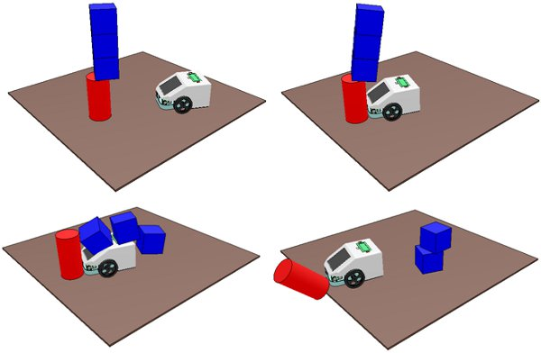
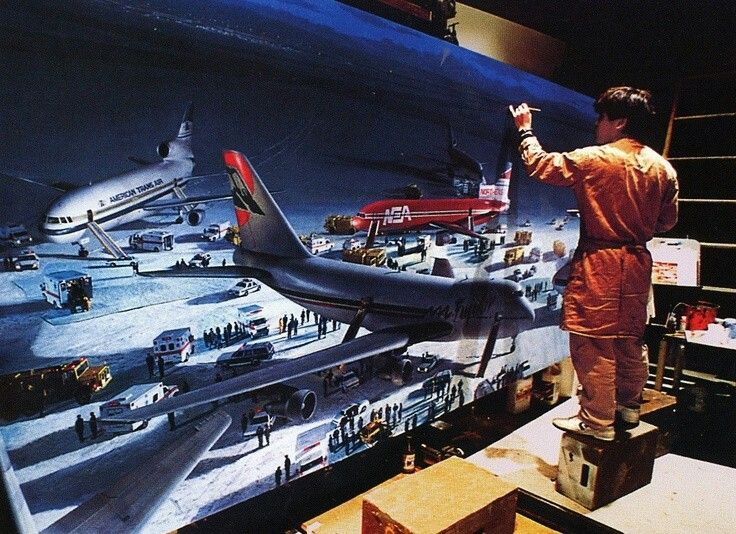
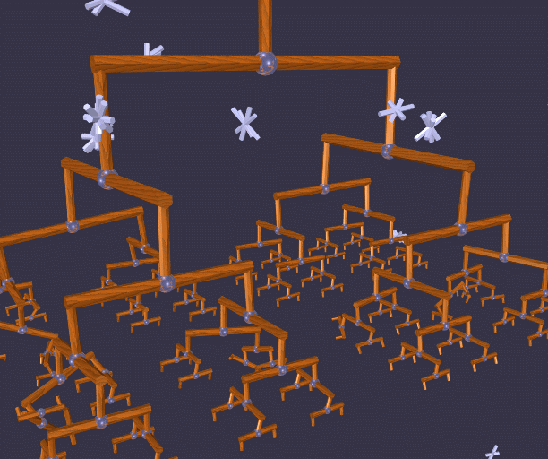
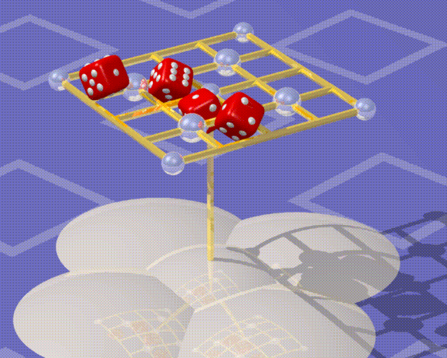
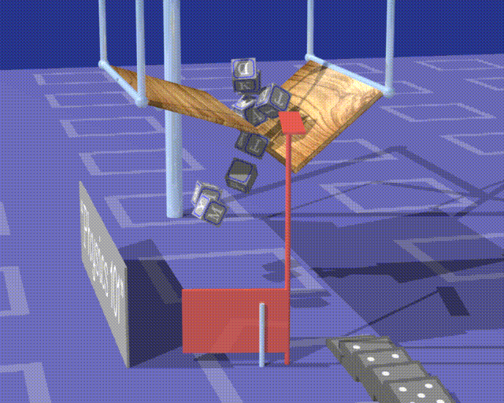

VFX TECHNIQUES II
Dynamics and Simulation
Created: 2019-08-12 Mon 13:34
The Physics
Newton's Laws of motion
- An object in motion stays in motion stays in motion and an object in rest stays in rest.
- F=ma
- For every action there is an equal and opposite reation.
Dynamics And Simulation
Dynamics
Dynamics is the branch of classical mechanics concerned with the study of forces and their effects on motion.
Types of Dynamics
- Rigid-body Dynamics(p2-js)
- Soft-Body/ Flexible Body Dynamics(Matter-Js, Physics-js)
- Fluid Dynamics
- Multibody Dynamics
- Analytical Dynamics
Simulation
A simulation is an approximate imitation of the operation of a process or system.

CGI Simulation
- A CG simulation software provides an approximate physical simulation
- dynamic elements, such as rigid body dynamics (including collision detection), soft body dynamics, and fluid dynamics
- of use in the domains of computer graphics, video games and film.
Physics Libraries
- Bullet Physics
- Havok
- PhysX
- Box2D
- Dynamic Animation and Robotics Toolkit (DART)
- Open Dynamics Engine (ODE)
- Newton Dynamics
Simulation Software
- Autodesk Maya
- Unreal Engine
- Unity
- Cinema 4D
- SideFx Houdini
Use in CGI
- objects or particles interact with each other
- affected by forces such as wind or gravity
- traditional animation methods quickly reach their limits
- Animating these elements individually would be a gargantuan task
- This is where simulation is the weapon of choice
Speed Vs Accuracy
| Real-time: | High-Precision: |
|---|---|
| - Uses simplified calculations and decreased accuracy to compute in real-time. | - Calculates Precise Physics for incereased accuracy. |
History of Dynamics and Simulation for Films
Early use of Physics in CG
- One of the earliest examples of dynamic, multidimensional physics calculations being made in a video game is, of course, Atari's Pong

Early Morphing
- Year: 1967
First Physics simulation
- Year: 1968
- Significance: Physics of a moving cat. Printed the frames on paper then converted to film.
First Key Frame Animation Software
- Year: 1971
- Significance: First Key Frame Animation Software
First 2D computer images
- Year: 1973
- Film: Westworld
- Significance: Cinema's first 2D computer images
First 3D computer graphics
- Year: 1976
- Film: Futureworld
- Significance: First 3D computer graphics
First Digital Matte Painting
- Year: 1990
- Film: Die Hard 2
- Significance: First Digital matte Painting by ILM

First 3D computer graphics
- Year: 1976
- Film: Futureworld
- Significance: First 3D computer graphics
First 2D computer images
- Year: 1973
- Film: Westworld
- Significance: Cinema's first 2D computer images
Development of Dynamics algorithms
Early Rigid Body collision
A pivotal paper was written by David Barraff describing a general purpose rigid body collision and contact simulator.
Rube Goldberg Machine - 1989

Falling dice - 1990

Lagrange-multiplier tree and snowflakes - 1996

Lagrange-multiplier tree and snowflakes - 1996
Role of Simulation Hardware
As 3D graphics became prevalent in during the 1990s, rendering them in real time began to put a heavy burden on computer processing hardware. This gradually lead to the introduction of dedicated Graphics Processing Units (GPUs) to supplement computers' over-taxed CPUs and take over graphics rendering tasks.
Types of cgi Dynamics
Rigid-body Dynamics
Definition
In physics, a rigid body is a solid body in which deformation is zero or so small it can be neglected.
- The distance between any two given points on a rigid body remains constant in time regardless of external forces exerted on it.
- A rigid body is usually considered as a continuous distribution of mass.
Particle Dynamics
Softbody Dynamics
Cloth Simulation
FEM
Mindblowing Make-up
Single Colored Background
Eye-popping CGI
Epic Stunts
Explosive Scenes
Youtube Test
Thank You
- Notes Link:
- Contact: 9967369456
- email: avik.c@whistlingwoods.net